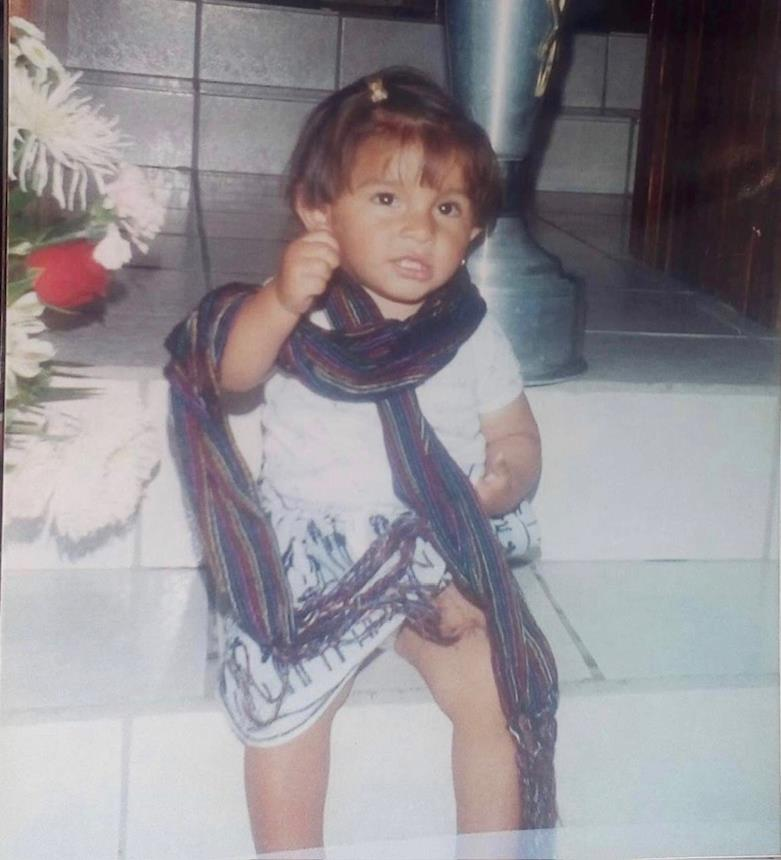
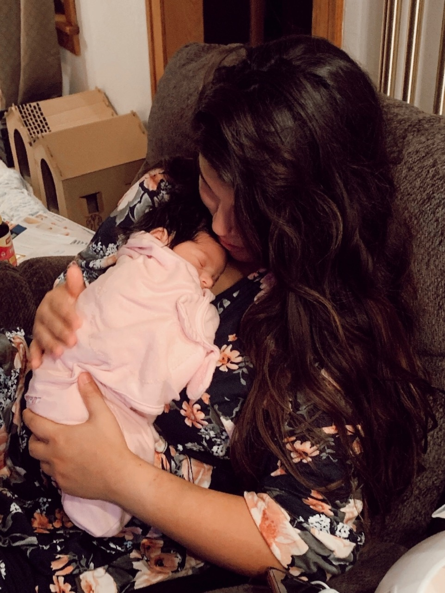

<!-- Jacob Thompson : bioSite sub Page --> 
<!DOCTYPE html>
<html lang="en">
<head>
    <link href="../main.css" type="text/css" rel="stylesheet"/>
</head>
</html>
<body>
    <div class="sub-container">
        <div class="sub-item a-item1">
            <a href="../index.html">
            <h2>< Home</h2>
            <div class="square" id="red"></div>
            </a>
        </div>
        <div class="sub-item a-item2"></div>
        <div class="sub-item a-item3"></div>
        <div class="sub-item a-item4"><h1>About</h1></div>
        <div class="sub-item a-item5">
            <p>
                1,800 miles away from home, Raquel Lopez had a lot to learn and adapt to when
            she moved to the United States. She was born in Guadalajara, Mexico and moved when
            she was only three years old. Coming to Iowa meant she had to adapt to a different
            environment from environmental to cultural differences. It can be a big culture shock for
            some people when they move to a different country. 
            </p>
        </div>
        <div class="sub-item a-item6">
            <figure>
                
                <figcaption id="a-caption">Age 3 in Mexico</figcaption>
            </figure>
        </div>
        <div class="sub-item a-item7">
            <div class="square" id="green"></div>
        </div>
        <div class="sub-item a-item8">
            <figure>
                
                <figcaption id="a-caption">Roadtrip to Minnesota</figcaption>
            </figure>
        </div>
        <div class="sub-item a-item9">
            <div class="square" id="red"></div>
            <div class="rectangle" id="green"></div>
        </div>
        <div class="sub-item a-item10">
            <p>
                She faced many challenges, including
            being fluent in two languages by age five. Having to move to another country and learning a
            different language changed the way Raquel felt. She knew that she wanted to help others
            who experience similar things and make sure no one felt the same pressure that was
            placed on her. Although her life has been filled with many challenges, there have been
            many rewarding moments, welcoming her two kids has brought a new meaning to Raquel’s
            life. 
            </p>
        </div>
        <div class="sub-item a-item11">
            <p>
                Being a mom comes with learning new things and having no breaks but when Raquel
            does get some free time, she likes to relax and sometimes she even has time to make
            some crafts. Raquel embraces all her experiences that she has had to go through and the
            lessons that she is learning as a mom. She hopes to soon graduate and get a career in the
            Human Resources field to be able to be there for others. There were many ups and downs
            that came with coming to a new country at a very young age. Raquel makes sure to use her
            experience as a tool to help her family and others that might be going along similar roads. 
            </p>
        </div>
        <div class="sub-item a-item12"></div>
        <div class="sub-item a-item13">
            <figure>
                
                <figcaption id="a-caption">Spending time with her daughter</figcaption>
            </figure>
        </div>
        <div class="sub-item"></div>
        <div class="sub-item"></div>
        <div class="sub-item"></div>
    </div>
</body>